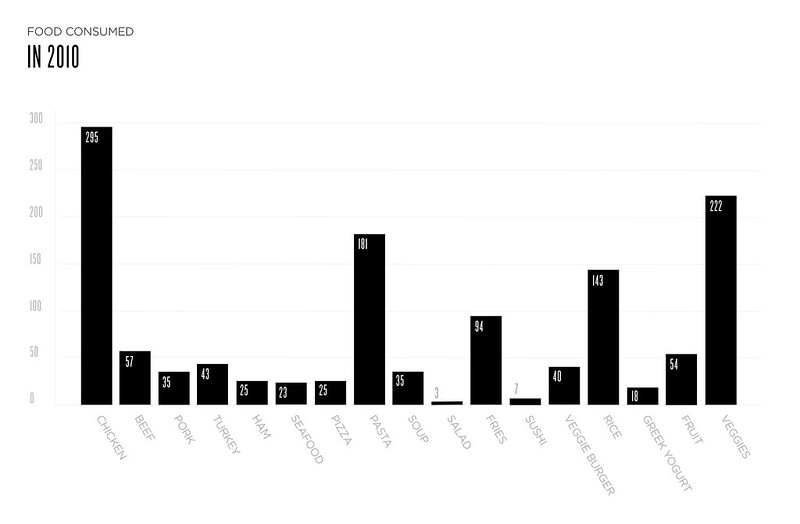
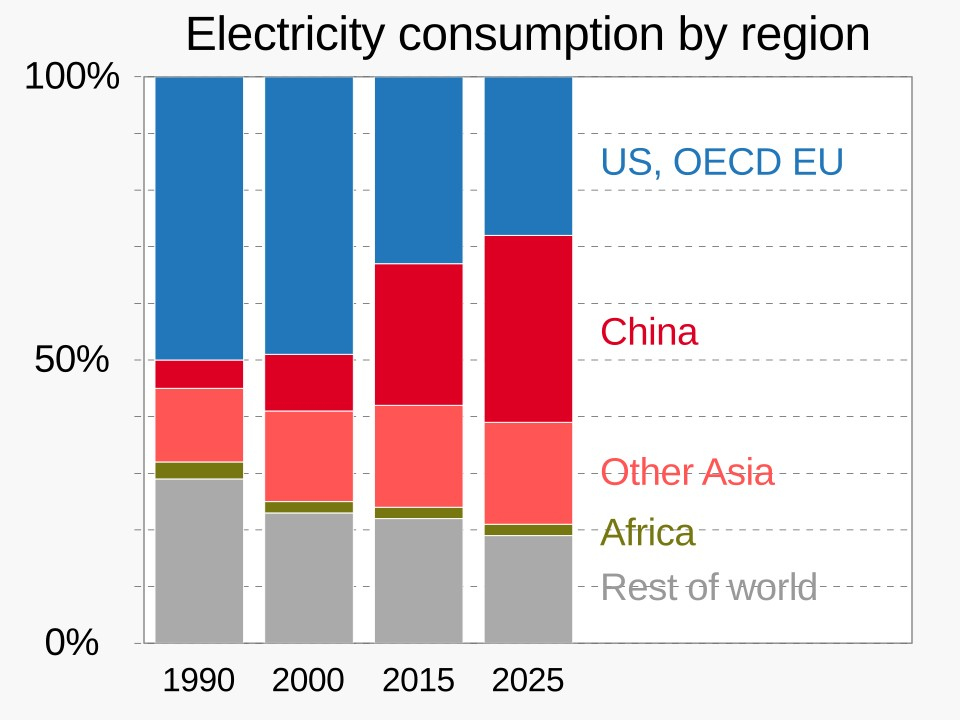

In today's digital world, there are many challenges that require complexity in order to fully comprehend a vast amount of systems. Systems are not a single object, or single-purpose tool, they are interconnected through many relationships. Systems can be defined as something that is connected to all ecosystems such as software, hardware, data flow, human interactions, and organizational processes. As students, we are expected to understand, design, and maintain systems that are constantly evolving and require a deep understanding of it. This is why systems thinking has become a foundational concept in this class. It is also why Model-Based Systems Engineering is becoming just as important to approach issues from the viewpoint of modern digital systems.
This blog serves as a way of defining what systems thinking is in my own words and explains why systems engineering is needed, describes the evolution of Model-Based Systems Engineering and explains why modeling is important when designing complex digital systems. Throughout this blog, I will be explaining what I've learned through the text.
Defining Systems Thinking
In my own words, systems thinking means stepping back far enough to see how all the moving parts of a situation connect and influence each other, instead of treating each issue as if it exists by itself. Instead of asking, "What is wrong with this part?" systems thinking asks, "How do the parts influence one another, and how does the structure of the whole system shape its behavior?"
This aligns closely with the definition provided by Southern New Hampshire University. According to Morganelli (2024), systems thinking is "a holistic approach to analysis that focuses on the way different parts of a system interact and how they influence one another within a whole." This definition highlights the importance of understanding boundaries, feedback loops, and interdependencies concepts that are important in digital environments where small changes can create large ripple effects.
System thinking also requires a shift in mindset. It forces us to step back, and think about concepts in a broader aspect. In IT, this means recognizing that a technical issue may actually be caused by workflow, a communication breakdown, or a misalignment of stakeholder expectations. Systems thinking helps us step back and look at issues from a broader perspective. Instead of repeatedly fixing the same user problem over and over, we can recognize the pattern and create a resource, like a guide or tool, that empowers users to solve common issues on their own. This not only improves their workflow but also frees up time to focus on more complex, high impact problems. As Morganelli (2024) said, systems thinking is not about "winning a battle" or proving someone right,it is about utilizing different perspectives to create better solutions.
This perspective is often seen in literature regarding system engineering. Holt (2023) emphasizes that system thinking is important to system engineering because it forces people to consider many aspects such as: boundaries, stakeholders, needs, constraints, and interactions. Systems thinking is the concept of recognizing how certain systems behave and it's not because of the small components that make up the whole system but because of the relationship between those components.
This helps us understand not only what a system is but how it behaves and why.
NASA subtly speaks of this idea in their article named SEH 2.0 Fundamentals of Systems Engineering, in 2019. They state that systems engineering is "a way of looking at the 'big picture' when making technical decisions." This big picture perspective is what system thinking is all about.
How Systems Thinking is Different from Linear Thinking
In order to fully comprehend system thinking, it helps to contrast it with a more traditional mindset that many of us grew up with: linear thinking.
Linear thinking assumes:
Problems have single, direct causes
Solutions produce predictable, isolated outcomes
Systems behave in straight forward, sequential ways
You can understand the whole by analyzing the parts independently
This approach works for simple problems like fixing a flat tire, or fixing the bed. But in the digital environment, the systems behave differently:
They are distributed across networks
Dependent on multiple layers
Used by unpredictable human actors
Constantly updated or reconfigured
Vulnerable to security threats
The Systems Thinking vs. Linear Thinking article explains that linear thinking relies on step by step, cause and effect reasoning and tends to focus on isolated parts rather than the whole (Critical Thinking Secrets, n.d.). This reductionist approach can lead to short term fixes that fail to solve issues at the root of it.
Morganelli (2024) also notes that linear thinking often leads to quick answers but not necessarily sustainable solutions.
Systems thinking, by contrast, is:
It considers the entire ecosystem
It takes into account the changes that could happen over time
It incorporates technical, human, and organizational perspectives
It also recognizes that systems can exist within another system
Morganelli (2024) explains that systems thinking requires individuals to consider all possible stakeholders, ask the right questions, and explore what lies "below the surface." This approach encourages deeper understanding and helps prevent consequences.
NASA's systems engineering article also highlights the limitations of linear thinking. NASA (2019) describes systems engineering as a "holistic, integrative discipline" that must balance the contributions of many different parts. This balancing act is impossible with linear thinking, which tends to isolate problems and ignore interactions.
In my experience, linear thinking often leads to temporary solutions. For example, if a server is overloaded, a linear thinker might simply add more CPU or RAM. A systems thinker would ask deeper questions: Why is the load increasing? Is there a design flaw? Is user behavior changing? Is the system interacting with another system in an unexpected way? Systems thinking leads to more sustainable solutions.
Why Systems Engineering Is Needed
Systems engineering exists because modern systems are:
Complex
Interdisciplinary
Risky
Rapidly evolving
NASA (2019) defines systems engineering as a "methodical, multi-disciplinary approach for the design, realization, technical management, operations, and retirement of a system." This definition highlights the need for structure, coordination, and lifecycle thinking.
Holt (2023) describes three "evils" that systems engineering must address:
Complexity
Lack of understanding
Poor communication
These challenges are mostly seen in digital environments. Systems engineering provides the processes, frameworks, and tools needed to design systems that are reliable, secure, and aligned with stakeholder needs.
NASA (2019) also emphasizes the importance of balancing competing constraints such as cost, schedule, performance, and risk. System engineering helps someone make informed decisions when making tradeoffs and avoid decisions that only upgrade one part of the system at the expense of the whole.
Defining Model Based Systems Engineering
Model Based Systems Engineering means using one shared digital model to design and understand a system, instead of relying on lots of separate documents which makes it confusing when making decisions.
Think of it as a project board with all the information you need that is condensed but still provides enough information to make decisions.
In Model Based Systems Engineering:
The Model represents the system in a simplified manner
All system knowledge is stored in Views
Views are expressed using a spoken language (SysML)
Views are constrained by a domain specific language (the Ontology)
Consistency is important across structure, behavior, requirements, and constraints
Holt (2023) explains that Model Based Systems Engineering improves consistency and communication by making sure that all system information is captured in a structured, interconnected model. It makes things clearer and helps the team spot problems early.
NASA's System Engineering engine also supports a model based approach. The Systems Engineering engine works by going through the same steps multiple times, each pass helping refine the system's ideas, requirements, and designs so they get better and more complete.
NASA (2019) emphasizes the importance of modeling early in the lifecycle to lower the risk and ensure that concepts are possible.
The Evolution of model based systems engineering
Organizations do not adopt Model Based Systems Engineering overnight. Holt (2023) describes a five stage evolution:
Stage 1 : Document Based
All the information is kept in documents, and there's no model at all.
Stage 2 : Document Centric
The documents might have diagrams, but there still isn't an actual model.
Stage 3 : Model Enhanced
A real model starts to form, but the information is still split between documents and the model.
Stage 4 : Model Centric
Most of the system's information is now in the model, and the needed structure and processes are set up.
Stage 5 : Model Based
The model holds all the system's information, and all the tools, processes, and rules work together smoothly.
Modeling with Model Based Systems Engineering
Modeling is the most important part of Model Based Systems Engineering. It deals with the Three Evils of Systems Engineering by making complexity clear, improving understanding, and improving communication.
1. Modeling Makes Complexity Clear
Visual Views reveal:
Structure
Behavior
Interactions
Dependencies
It helps engineers see where things are complicated and how to deal with them.
2. Modeling Improves Understanding
Holt (2023) describes two simple rules:
If a model is easy to create, the information is clear
If a model is hard to create, the information is ambiguous
Modeling helps you spot misunderstandings early on.
3. Modeling Improves Communication
Models provide a shared language across stakeholders.
SysML acts as the spoken language, while Ontology acts as the domain specific language.
NASA (2019) emphasizes that early modeling, especially during Pre Phase A and Phase A, is important for reducing lifecycle cost and avoiding expensive maintenance.
Conclusion
Systems thinking is not just a concept, it is a mindset that helps us make sense of today's complex digital world. Instead of viewing things in a straight line, it encourages us to see how everything connects and affects everything else. This helps us understand how systems work, why problems happened, and how one change can impact the whole system
Model Based Systems Engineering builds on this mindset by giving us the tools and structures to design and manage complex digital systems. As technology becomes more complicated, Model Based Systems Engineering is becoming not just helpful, but essential.
For people working in IT, cybersecurity, or system design, systems thinking and Model Based Systems Engineering are no longer optional skills, they're important to build and maintain the systems.
Module 1.2 Blog Post
Life Cycle and How Models helps Shape the Future of Digital Systems
Systems engineers don't just build systems , they guide them through a journey from conception to retirement. This journey is known as the system development life cycle, and it is one of the most important models in systems engineering. In Systems Engineering Demystified, Jon Holt emphasizes that systems engineering is fundamentally about defining approaches, structured ways of thinking that help engineers navigate complex and uncertain processes throughout a system's lifetime (Holt, 2023)
Life Cycle Models are very important in these approaches. They define how a system evolves, when decisions are made and how risks can be managed and prevented. In this post, I'll define the system development life cycle, explore three major life cycle models: linear, iterative, and incremental. This is a reflection on why life cycle thinking is important for designing sustainable and adaptable digital systems. I'll also integrate information from NASA's SEH 3.0 Program/Project Life Cycle, which provides a real-world example of how life cycle thinking is applied in such environments.
What Is the Systems Development Life Cycle?
The systems development life cycle is a structure that explains the end-to-end process that guides a system when you identify a need. It covers the entire process. It provides a way to:
Understand needs
Define requirements
Design and build solutions
Validate performance
Operate and maintain the system
Retire or replace it responsibly
Holt describes the system development cycle as a sequence of Life Cycle Stages like:conception, development, production, utilization, support, and retirement and each has their own purpose and decision (Holt,2023). Life Cycle Models define how we move through those stages.
NASA's SEH 3.0 provides a good example of this. NASA organizes its program and project life cycle into distinct phases separated by Key Decision Points (KDPs), which determine whether a project is ready to move forward. As NADA explains, "KDPs are the events at which the decision authority determines the readiness of a program/project to progress to the next phase of the life cycle" (NASA, 2019). This structure makes sure that progress is visible, risks are managed, and decisions are made at different points.
Three Life Cycle Models: Linear, Iterative, and Incremental
The three models explored in System Engineering Demystified represent different concepts of system development.Understanding their strengths and weaknesses helps engineers choose the right approach for the right problem.
1. The Linear Life Cycle Model
This is the simplest approach. There is another model similar to this called the Waterfall Model.Work flows in a straight line:
Requirements
Design
Implementation
Verification
Deployment
Maintenance
Each stage must be done before the next begins.
Key Characteristics
In Sequence
Predictable
Documented
It is emphasized upfront before planning
Advantages
Clarity and structure: Everyone knows what happens next.
Strong documentation: Useful for industries like aerospace or healthcare that needs to follow proper procedure.
Easy to manage: Progress is straightforward to track.
Drawbacks
Hard to adapt when requirements change
Problems often surface during testing
Rarely true for modern digital systems.
When it works
It works really well when it's understood and is a stable system
There is a lower risk and lower uncertainty
There must be someone to regulate the process
It works well for hardware projects
NASA's life cycle structure is a reflection of the waterfall model. For example, NADA's stages from Formulation to Implementation and its detailed Phase A-F progress shows a structured, sequential approach. NASA emphasizes that each phase has specific entrance and exit criteria, and projects cannot continue unless they meet certain criteria (NASA, 2019).
2. The Iterative Life Cycle Model
The iterative model is a concept that systems evolve through repeated cycles of refinement. Instead of completing each stage once, the team continuously go through the stages multiple times:
Analyze
Design
Build
Evaluate
Repeat
Each time it improves the system based on feedback
Key Characterictic
Repetitive
Driven by Feedback
It is centered around learning
Supports a systems where requirements keep evolving
Advantages
Reduces risk in the early stages
Continuous Learning
Adaptability
Drawbacks
Harder to plan
Requires disciplined teams
Can cause stakeholder to wait longer
When it Works
Complex systems
High uncertainty
Research-heavy or exploratory projects
NASA's early phases, especially Pre Phase A (Concept Studies) and Phase A (Concept and Technology Development), reflect an interactive thinking. NASA repeatedly refines missions, finds alternatives, and updates requirements.As NASA notes, "Advanced studies may extend for several years ... establishing mission goals and formulating top-level system requirements and ConOps" (NASA, 2019). This is iteration in action.
3. The Incremental Life Cycle Model
The incremental model builds the system piece by piece. Instead of showing the entire system at once, the team delivers increments, slices of the systems over time.
Each increment includes
Requirements
Design
Implementation
Testing
But only a part of the system's function.
Key Characteristics
Partial deliveries
Prioritized functionality
Development possible
The progress is vissible
Advantages
Early value delivery
Reduced risk
More engagement with stakeholder
Supports scaling
Drawbacks
Integration can be complex
There is a risk to architecture
Requires strong prioritization
When It Works
Digital products
Modular architectures
Projects needs feedback
NASA's Phase C (Final Design and Fabrication) and Phase D (System Assembly, Integration, and Test) reflect incremental development. Hardware and software parts are developed, tested, and integrated in stages. NASA emphasizes building engineering units, prototypes, and models before the final product, clear examples of incremental models(NASA, 2019).
Why Thinking in Life Cycles Matters for Digital Systems
Digital systems are not constant. They evolve, scale, break down, and eventually become out of data. Thinking in life cycles helps engineers design systems that are:
1. Sustainable
Life cycle thinking forces teams to consider:
Maintenance
Upgrades
The work they would do in the future if they decide to take an easy path today
Long-term resource needs
2. Resilient
Understanding the life cycle helps teams anticipate:
Failure modes
Operational risks
Environmental changes
3. Adaptable
Digital ecosystems change rapidly. Life cycle thinking supports:
Modular architectures
Continuous improvement
Refinement
4. Responsible
Life cycle thinking includes:
Ethical considerations
Data
End-of-life planning
5. Strategically aligned
Organizations that think in life cycles:
Make better investment decisions
Manage risk more effectively
Avoid short-term fixes that cause long-term problems
NASA's model shows this really clearly: each step, from the first idea to the final step, it is built to keep the project stable, safe, and on track for success.NASA states that "decisions that affect cost continue to be amenable to the systems approach even as the end of the system lifetime approaches" (NASA, 2019).
Conclusion
The linear, iterative, and incremental Life Cycle Models each offer a different perspective for understanding how systems evolve:
Linear models emphasize structure
Iterative models emphasize learning and refinement.
Incremental models emphasize early value
NASA's SEH 3.0 life cycle provides a real example of how these models blend in. While NASA uses a structured, phase-based approach, its early concept phases are iterative, and its design and implementation phases are incremental.As Holt argues, systems engineering is mostly about approaches or structured ways of thinking that help us navigate what is complex (Holt, 2023).
Module 2.1 Blog Post
Designing for People: How Perception, Attention, and Empathy Shape Human Centered Design
Designing for people can sound simple, obvious, and may not need a lot of thought into it yet it's quite the opposite. The digital world is full of interfaces that frustrates, confuses, or overwhelms people which is why it is essential to incorporate some elements to it. We've also experienced times when we open the door the wrong way, checkout processes that have too many steps, or apps that don't have the components set up in an intuitive way and require a lot of digging before you get to it. These failures aren't accidents, they are assumptions that people make when designing the system that prioritize technology and business goals.
Human-centered design exists to create a balance to it. It is a philosophy and practice that starts with people's perceptions, limitations, emotions, and contexts and can build something from there. As the Syracuse University School of Information Studies (2026) explains, human-centered design is essentially about "deep empathy and understanding of people's needs before creating solutions." It asks designers to pause and understand the human experience before making decisions that will shape it.
In this post, I explore what it means to design for people by connecting human-centered principles with insights from perceptions, and cognitive psychology, visual hierarchy research, and four fundamental UX laws: Jakob's Law, Fitts's Law, Hick's Law, and Miller's Law. Together these perspectives show how early design choice can either support or hinder usability and why empathy, attention and perception must guide every stage of the design process.
Human Centered Design: A Philosophy Grounded in Empathy
Let's think of human-centered design as a mindset rather than a method to design a system. It begins with the belief that the people who use a product are the experts in their own lives. As Syracuse University (2026) notes, Human Centered Design "looks at the whole person, their emotions, motivations, cultural context, and community , rather than treating them as a 'user' clicking buttons on a screen." This difference matters. When designers focus only on interface interactions, they might miss the larger human experience that influences how people actually use it.
Human Centered Design is built on three core phases:
Inspiration (Discovery) : immersing in users' environments, observing real behaviors, and uncovering needs they may not articulate.
Ideation (Design) :generating ideas, prototyping quickly, and testing early to learn what works.
Implementation (Delivery) : refining solutions, scaling them, and continuing to iterate based on real world use.
These phases are not linear. Designers loop back as they learn more, adjusting their understanding of the problem and refining their solutions. This iterative process reflects a core truth: designing for people requires humility. It means acknowledging that assumptions are often wrong and that real insight comes from observing people in context.
Human-Centered Design vs. Design Thinking: Mindset vs. Method
People often use "human centered design" and "design thinking" interchangeably, but they serve different purposes. Human-Centered Design is the philosophy, the commitment to putting people first. Design thinking is the process,the structured set of steps that helps teams apply that philosophy.
Syracuse University (2026) describes Human Centered Design as the "compass" and design thinking as the "map." You can follow the map without truly caring about people, and you can care deeply about people without following a formal map. But when the two work together, they create solutions that are both empathetic and actionable.
This difference is especially important in the technology sector where teams often go straight into solution mode. Human Centered Design reminds us to slow down, observe, and understand before building. Design thinking gives us the tools to turn that understanding into something possible.
Perception and Attention: Designing for the Human Mind
To design for people, one must understand how people think and process information. Jeff Johson's Design with the Mind in Mind (2020) emphasizes that perceptions are not objective, they are biased, selective, and shaped by our mind. Users do not see everything on a screen, they see what stands out, what aligns with their expectations and their attention.
Perception is selective
Users focus on what is most important. Visual hierarchy, contrast, and grouping can determine what they notice first. If everything looks equally important, nothing stands out and users must work harder to navigate the interface.
Attention is limited
People can only focus on one focal point at a time. Anything outside that narrow region is processed with low resolution. This is why error messages placed far from a clicked button can go unnoticed.
Cognitive load is real
When interfaces demand too much mental effort, users become overwhelmed, miss details, or abandon tasks. Johnson (2020) explains that cognitive load increases when users must remember information, decipher unclear layouts, or navigate inconsistent patterns.These cognitive realities are not flaws , they are human. And they must guide design decisions from the very beginning.
Visual Hierarchy: A Critical Tool for Reducing Cognitive Load
Visual hierarchy is one of the most powerful ways designers can support perception and attention. Saw & Gatzke's (2024) research on redesigning a hereditary colorectal cancer lab report demonstrates how essential hierarchy is when presenting complex information.
Their study found that the original report had almost no visual hierarchy: critical information was hard to find, related content was scattered, and everything appeared at the same visual level. This created cognitive overload for clinicians who needed to make quick, accurate decisions.
By applying visual hierarchy principles : scale, color, proximity, alignment, white space, and interaction, the team transformed the report into a clear, scannable interface. They created a two level hierarchy that separated high level summaries (for general practitioners) from detailed variant information (for genetic counselors). Color was used to highlight mutation severity, and related content was grouped into aligned columns to support rapid scanning.
Their findings reinforce a key principle: when everything is emphasized, nothing is emphasized (Saw & Gatzke, 2024) . Effective hierarchy requires contrast, the "smallest effective difference", to guide attention without overwhelming the user (Saw & Gatzke, 2024) .
This case study also emphasizes the importance of participatory design. Saw & Gatzke (2024) emphasize that involving users early allowed the team to remove unnecessary information, refine priorities, and ensure the final design aligned with clinical workflows. This seems similar to Human Centered Designs which emphasizes empathy, iteration, and collaboration.
Jakob's Law: Design for Familiarity
According to Jakob's Law, users prefer your interface to work like the interfaces they already know (Yablonski, 2020). This law emphasizes empathy because it focuses on users' past experiences and not meeting up to their expectations can force users to think harder.
Designers support usability when they:
Follow established patterns
Use predictable navigation
Align with common conventions
Familiarity reduces cognitive load and helps users focus on their goals instead of learning a new system. This is especially important in high stakes environments like healthcare, where confusion can have serious consequences.
Fitts's Law: Design for Human Motor Limitations
Fitts's law is a reminder that people can hit targets faster when they're big and easy to reach. Yablonski (2020) highlights that this matters ever more on touchscreens, where users rely on their fingers instead of precise pointing devices.
Designers can support motor performance by:
Making touch targets large enough
Providing generous spacing
Placing important actions in easy to reach areas
These decisions may seem unimportant but they have a huge impact on users. A button that is too small or too close to another can lead to errors, frustration, or even abandon it entirely.
Hick's Law: Reduce Decision Complexity
Hick's Law explains that the more options you present and the more complex they are the longer it takes people to decide. Yablonski (2020) emphasizes that it's not about removing choices entirely, but about presenting the most relevant ones when they are needed.
Examples:
Google Search hiding filters until after a query
Netflix highlighting "Trending Now" to reduce choice paralysis
Notion using progressive onboarding
Hick's Law emphasizes that designers should simplify but not oversimplify components, it requires a balance of empathy and testing when making decisions about the design. Too many choices overwhelm users; too few choices limit their ability to act.
Miller's Law: Chunk Information to Support Working Memory
Miller's law emphasizes that working memory is limited and that chunking helps people process information more effectively (Yablonski, 2020).
Chunking supports users by:
Grouping related items
Using headings and subheadings
Breaking content into digestible sections
Creating clear visual hierarchy
Why Human Centered Design Matters
Human Center Design has value on many levels:
1. Better business outcomes
Solutions should focus on what users actually need to have a higher adoption, stronger satisfaction, and lower risk of failure.
2. Reduced risk
Testing early can prevent mistakes that could cost even more money to fix later on. It's far cheaper to revise a prototype than to fix a launched product.
3. Inclusivity and accessibility
Human Center Design encourages people to design with a diverse community and to think about the community constantly.
4. More sustainable solutions
Participatory design can make sure that solutions fit context and workflow and are not supported by assumptions.
Designing for People Requires Humility
Human centered design could be an act of respect as it requires designers to:
Let go of assumptions
Observe real behavior
Listen deeply
Iterate often
Accept that users, not designers, define success
As Syracuse University (2026) notes, Human Center Design asks us to "set aside our assumptions and experience the world from someone else's perspective." When this process is implemented, we create solutions that feel intuitive because they align with how people actually think, feel, and behave.
Conclusion: The Less Users Have to Think, the More They Can Do
Designing for people means to take into account perception, attention, emotion, and limitation. One should be applying human centered design principles, understanding cognitive psychology and using UX laws as a form of decision-making. It means creating visual hierarchies that guide attention, reduce cognitive load and support users' goals.
When designers manage to design an interface that reduces stress to users, it is most likely to be successful and shows that structured information is essential. When interfaces feel effortless, users can focus on what truly matters.
Module 2.2 Blog Post
What Makes Digital Systems Usable? How Memory, Mental Models, and Cognitive Shortcuts Shape Interaction
Digital systems are not just made of screens, buttons and menus. They are cognitive experiments that allow a space for users to think, remember, decide, and act. When a system is usable, it feels intuitive not because it is simple, but because it aligns with how the human mind naturally works. When a system is intuitive it allows users to effectively use it, when it isn't intuitive it can cause cognitive overload. In this post, I explore how memory, mental models, habits, and perceptual shortcuts shape user interaction, and how thoughtful design can reduce cognitive demands, support goals, and create interfaces that feel effortless.
I will explain what I found from Designing with the Mind in Mind(Johsnon, 2020),The Laws of UX (Yablonski, 2020),The design of everyday things (Norman, 2013),Enhancing the explanatory power of usability heuristics (Nielsen, 1994).
Memory and Mental Models: Why Users Struggle More Than Designers Expect
One of the most important pieces of information from cognitive psychology is that working memory is tiny. Johnson (2020) explains that humans can hold about five meaningful items in working memory at once. These limitations shape everything about how users interact with digital systems. This is why it's important to take it into account when creating a user interface.
As Norman explains in Chapter 1, users form mental models based on signifiers and feedback, not on how a system actually works (2013). When an interface doesn't meet these expectations, users experience confusion and cognitive strain.
Working memory is little and can easily be overwhelming
When a user is trying to complete a task, their working memory is already occupied by:
Their goal
The steps they think they need to take
The information they must compare
The details they must remember
Every other detail such as unclear labels, hidden options, inconsistent layouts can consume cognitive resources. This is why users may feel lost even in a system that seems straightforward to designers.
Johnson (2020) emphasizes that interfaces must externalize memory. Systems should show users:
What they've done
What they haven't done
Where they are
What comes next
This is why progress indicators, breadcrumbs, visited link colors, and read/unread markers are essential. They reduce the need for users to remember.
Takeaway: If the user must remember something to complete a task, the interface has already failed.
Mental models guide expectations and mismatches create friction
Users bring mental models: internal expectations about how things should work. These models come from:
Past experiences
Other apps
Analogies
Cultural conventions
When a system aligns with a user's mental model, it feels intuitive. When it violates that model, the user must stop and think.
When a Download button unexpectedly moves from the top right to the bottom left, users experience a brief cognitive jolt. The interface no longer matches their mental model, and working memory must fill the gap to make sense of the change.
This is why consistency is important because it allows users to utilize a tool efficiently. Yablonski (2020) describes this in Tesler's Law, which states that predictable interfaces reduce cognitive load and increase learnability.
Takeaway: Consistency is not a design preference; it is a cognitive requirement.
Recognition Over Recall: Why See and Choose Beats Remember and Type
Chapter 9 of Designing with the Mind in Mind explains a foundational principle: Recognition is easy; recall is hard. Humans have grown accustomed to recognizing patterns instantly, faces, objects, and threats. But recalling information without cues is slow and could cause an error.
Recognition is fast, automatic, and reliable
Recognition happens when perception reactivates an existing neural pattern. This is why:
We instantly recognize icons
We can identify apps by color
We know a website by its layout
We can scan thumbnails quickly
Recognition requires almost no working memory.
Recall is slow, effortful, and unreliable
Recall requires the brain to reconstruct a memory without perceptual cues. This is why:
Passwords are hard to remember
Command line interfaces are difficult for novices
Hidden features are forgotten
Users repeatedly ask, Where was that setting again?
Interfaces that rely on recall create unnecessary cognitive load.
Design must favor recognition
This principle appears across UX literature:
Nielsen's heuristic: Recognition rather than recall
Yablonski's Tesler's Law
Johnson's chapters on memory and perception
Together, they argue for:
Visible menus
Clear labels
Icons with text
Thumbnails
Recently used items
Auto suggest and autocomplete
Takeaway: If users must remember something, the system should instead show it.
Cognitive Load and Poor Design: Real Examples of Unnecessary Stress
To understand what makes systems usable, it helps to examine what makes them unusable. Poor design often stems from ignoring cognitive limitations.
Example 1: Hidden options that rely on recall
In Johnson's discussion of recognition vs. recall, he explains that high use functions must be highly visible. When designers hide frequently used actions behind menus or icons, users must remember where they are.
I once used a mobile banking app where the Transfer Money feature,one of the most common tasks,was hidden behind a small, unlabeled icon in the top corner of the screen. Most users expected transfers to appear on the main dashboard or in a clearly labeled menu. Instead, they had to remember that the function lived behind a generic symbol that didn't communicate its purpose. Every time I opened the app, I had to pause and think, Where was that again?
This causes users to be frustrated because it doesn't follow:
Recognition over recall: the action wasn't visible, so users had to remember its location.
Nielsen's visibility heuristic: the interface failed to show users the actions available at the moment they needed them.
Tesler's Law: the app pushed the complexity onto the user by hiding a task behind an ambiguous icon.
Example 2: Inconsistent navigation that breaks mental models
In The Laws of UX, Yablonski (2020) describes Jakob's Law: Users expect your system to work like other systems they already know.
A travel website violated this by placing the Checkout button at the top left,opposite of where most sites place it. Users repeatedly missed it, scanning the bottom right instead.
This inconsistency forced users to:
Search
Reorient
Break their habitual scanning patterns
The result was unnecessary cognitive load.
Example 3: Poor feedback that leaves users uncertain
Feedback is essential for the Evaluate stage of the human action cycle (Johnson, 2020). Without feedback, users cannot tell whether their action worked.
An example of this would be when you want to purchase something at a later time so you click add to cart but you don't get some form of confirmation that it was added to your cart.
This breaks certain rules to take into account:
Feedback
The human action cycle
Basic cognitive principles of attention and memory
Takeaway: Feedback is not optional,it is how users know the system is working.
Tesler's Law: Complexity Cannot Be Eliminated
Tesler's Law (also known as the Law of Conservation of Complexity) states: Every system has an inherent amount of complexity. Designers must decide whether the system or the user will handle it. This law is crucial for understanding usability.
When designers push complexity onto users
Examples include:
Overly strict password rules
Multi step authentication flows
Hidden settings
Unpredictable navigation
Forms that require memorizing information
These designs increase cognitive load because they rely on:
Recall
Problem solving
Trial and error
When designers absorb complexity
Good design hides complexity behind:
Smart defaults
Auto completion
Clear pathways
Progressive disclosure
Helpful feedback
This aligns with:
Recognition over recall
Consistency
Mental model alignment
Takeaway: Usability improves when designers, not users, carry the cognitive burden.
Interface Consistency and Feedback: The Foundations of Usability
Consistency and feedback are not aesthetic preferences, they are cognitive supports.
Consistency reduces cognitive load
Consistency helps users:
Form habits
Predict outcomes
Navigate without thinking
Build stable mental models
This is why:
Buttons should stay in the same place
Icons should behave consistently
Navigation patterns should not change unexpectedly
Nielsen's Consistency and standards heuristic and Yablonski's Tesler's Law both emphasize that predictable interfaces reduce cognitive load by aligning with users existing mental models.
Feedback supports the human action cycle
Johnson (2020) describes the Goal , Execute , Evaluate loop. Feedback is essential for the Evaluate stage.
Good feedback:
Confirms success
Signals errors
Shows progress
Reduces uncertainty
Examples include:
Progress bars
Password strength meters
Saved confirmations
Error messages that explain what went wrong
Norman's Gulf of Execution and Gulf of Evaluation describe exactly why feedback matters: users must understand what actions are possible and whether their actions worked (2013). Without clear feedback, the evaluation stage collapses.
Takeaway: Without feedback, users cannot evaluate their actions and usability collapses.
How Habits and Mental Shortcuts Shape Interaction
Humans rely on fast, unconscious behaviors that reduce cognitive effort. Johnson (2020) explains that users prefer familiar paths because they require less attention.
This explains why:
Users stick to old workflows even when better ones exist
Keyboard shortcuts become second nature
People resist redesigns that break habits
Yablonski's Tesler's Law echoes this: Users prefer patterns they already know.
Takeaway: Usability increases when systems support habit formation rather than forcing users to relearn.
Bringing It All Together: What Makes a Digital System Usable?
A usable system is not one that looks clean or modern. A usable system is one that aligns with human cognition.
Usable systems:
Reduce memory demands
Support recognition over recall
Maintain consistency
Provide clear feedback
Match users mental models
Respect cognitive limitations
Absorb complexity instead of shifting it to users
Module 3.1 Blog Post
How Interface Logic Shapes User Experience
Digital interfaces are more than just a screen with buttons and menus. They are built in a certain way that allows users to interpret signals, make decisions, and attempt to accomplish a task without struggling. The structure of an interface, from its visual hierarchy to the placement of controls can shape how users move through a system. When interface logic aligns with human cognition, users can feel confident, efficient, and in control.
In this post, I will explore how visual and interaction design choices influence user behavior.
Interface Structure as Cognitive Guidance
"Playtime for Robots - Creativity in AI" by jurvetson is licensed under CC BY 2.0.
One of the most essential ideas in Johson's (2020) chapter on decisions-making is that users rely on "System 1", which is the fast, automatic, intuitive part of the mind. System 1 can cause users to find patterns, shortcuts, and predictability. It does not analyze, it reacts. The structure of an interface must support quit recognition through visuals that a user is able to recognize.
An interface must use visual hierarchy to guide attention. Visual hierarchy is when elements are arranged in a way so users know what to look at first, second, and third. When hierarchy is clear, users can navigate without thinking about it. When it is unclear, users must rely on "System 2", the slow analytical part of the mind, which increases cognitive load and can slow down the process for the user (Johson, 2020).
Yablonski (2020) also mentions this idea through the Aesthetic-Usability Effect, which states that users perceive visually pleasing interfaces as easier to use. This effect is not just based on looks but cognitive as well. Interfaces that take this into account can reduce user's stress and encourage exploration and increase trust. When users feel comfortable, they can tolerate any minor errors.
Ishn (2020) adds that the brain naturally organizes information into schemas, or mental structures that help us interpret information. Interfaces that align with familiar schemas such as a predictable navigation pattern or consistent iconography can feel intuitive. Interfaces that don't account for this forces users into "System 2" thinking.
How Control Layout Shapes Behavior
Control layout is the placement and grouping of interactive elements which affect how users behave. Johnson (2020) emphasizes that users form mental models based on past experiences. They expect interfaces to behave consistently across different devices. When controls don't meet expectations, users tend to hesitate, make errors, or completely give up.
For example, a navigation bar placed at the top of a webpage can signal to users that it is highly important based on the high-level structure it has. A sidebar suggests a more detailed structure. Users interpret these layouts differently because they are based on different mental models of information architecture.
Control layout can prevent errors, which Johson (2020) identifies as essential in ensuring that users are confident while navigating interfaces. When controls are grouped logically and spaced appropriately, users are less likely to make mistakes.
Yablonski's (2020) Postel's Law also states that interfaces should "be conservative in what you do, be liberal in what you accept from others." This means that interfaces should accept a wide range of user input or behaviors but provide clear, predictable outputs. A well-structured control layout helps users understand what actions are possible.
Ishn (2020) adds that Gestalt principles, such as proximity, similarity, and continuity, play a major role in how users interpret control layout. For example, controls placed close together are perceived as related, while controls separated by whitespace feel distinct. These perceptual shortcuts help users understand interface logic instantly.
The Von Restorff Effect and Visual Differentiation
"SIGNAGE" by Neal. is licensed under CC BY 2.0.
Another UX law that strongly influences interface logic is the Von Restorff Effect, which states that items that stand out are more likely to be remembered. In interface design, this principle is often used to highlight primary actions, warnings, or new features.
For example:
A bright red "Stop" button among gray controls immediately draws attention.
A promotional banner styled differently from surrounding content signals urgency.
A new feature badge in a contrasting color encourages exploration.
Yablonski (2020) explains that the Von Restorff Effect is especially powerful when used sparingly. If everything stands out, nothing stands out. Designers must decide what deserves emphasis and ensure that visual differentiation aligns with user goals, not just business goals.
Ishn (2020) explains how priming influences user behavior. When users see an element that stands out, their brain automatically thinks it is important. This makes the Von Restorff Effect a good way of guiding user attention.
A good example of this is Amazon's homepage. The search bar immediately captures your attention because it stands out and is positioned in the center. Amazon also relies on recognizable iconography, such as the shopping cart and user account icons. These symbols reduce cognitive load because the brain processes familiar images faster than text.
How Visualization Memorability Connects to UX Laws and Cognitive Psychology
The findings from Borkin et al.'s (2013) memorability study align closely with the cognitive principles described in Designing with the Mind in Mind and the concepts highlighted in Laws of UX. Even though the study is about charts, it still applies to regular interfaces because our brain works the same way when we look at anything on a screen.
System 1 Processing and Perceptual Salience (Johnson, 2020)
Johnson explains that users rely heavily on System 1, the part that relies on color, contrast, faces, and familiar shapes. Borkin et al. found that visualizations containing pictograms, bright colors, and rounded shapes were significantly more memorable (2013). This supports Johson's concept that the brain is shaped to detect natural objects and high-contrast visuals instantly.
In other words, the same shortcuts that help users recognize a button or icon also helps them remember a visualization.
The Von Restorff Effect (Yablonski, 2020)
The memorability study strongly shows the Von Restorff Effect, which states that items that stand out are more likely to be remembered. Borkin et al. (2013) showed that unique visualization types, colorful displays, and pictorial elements are more memorable than common charts like bar graphs or tables.
This shows that if a certain button, or diagram was to be unique it can catch the attention of users.
Aesthetic Usability Effect (Yablonski, 2020)
Yablonski states that users perceive attractive interfaces as easier to use (2020). Borkin et al. found that visually rich, colorful, and rounded visualizations were more memorable than minimalist ones (2013). This suggests that aesthetics do more than make an interface look nice,they shape cognitive processing, influencing what users notice, remember, and trust.
Schema Theory and Familiarity (Johnson, 2020)
Johnson explains that users interpret new information through schemas, or mental models built from past experience. Borkin et al. found that visualizations resembling familiar objects are easier to remember. This supports Johnson's argument that memory is shaped by schema consistency.
Cognitive Load and Distinctiveness
Johnson emphasizes that working memory is limited to 3-4 items, and that interfaces must reduce cognitive load. Borkin et al. found that common charts (bar, line, table) were less memorable because they blend together so they lack distinctiveness. This shows that designers must create clear, differentiated visuals to help users process and retain information.
A Personal Experience I had When I struggled with an Interface
One of the most frustrating interface experiences I've had was while trying to order a drink from Luna's website, a new local shop. They're a small business, I assume they may not yet have the budget or resources to refine their digital experience, but the interface issues still made the process difficult.
The biggest problem was navigation. After clicking on a drink to view its details, I couldn't easily return to the previous page. There was no navigation bar, no breadcrumb trail, and no clear Back or Menu control. I had to stop, think and look around the screen just to figure out how to see the rest of the drinks. That moment of hesitation is exactly what Johnson describes in Designing with the Mind in Mind, when an interface breaks the user's mental model, it forces them to think instead of the fast flow they expect.
The experience got worse when I clicked a button labeled All Drinks. Instead of showing the full menu, it showed a 404 error page. It made it seem unreliable, which is a concept that is shown in UX Laws by Yablonski, where he states that websites should revolve around feedback, error prevention, and trust.
When an interface is difficult to navigate it makes users hesitate and eventually give up. In my case, I ended up abandoning the order and simply went to the store.
A Positive Experience
In contrast, the interface logic of Amazon provides a good example of effective design. The layout is structured around a clear hierarchy and the search bar is the primary button users go to. It's large, centered and visually recognizable because it matches the mental model most users already have. Johson (2020) explains that users rely heavily on System 1, which is fast and automatic. The brain naturally looks for the most obvious cues on the screen, and Amazon intentionally makes the search bar the most visually big element so users don't have to think about where to start.
Amazon also uses simple, familiar iconography, like the shopping cart, the menu icon, and the user profile symbol. According to Jsono, icons reduce cognitive load because the brain processes images faster than tests. You don't have to read your car, the cart icon instantly tells you what it is. This aligns with Yabloski's Aesthetic-Usability Effect, which states that clean and visually appealing elements feel easier to use, and with the Von Restoff Effect, which explains why the icons stand out and are easier to remember.
Even Borkin et al.'s (2013) memorability research supports this. Their study found that visuals containing recognizable objects, especially recognizable shapes or familiar symbols , are more memorable. Amazon's icons work for the same reason, they designed it by leveraging the brain's natural ability to quickly recognize and recall familiar shapes.
Cognitive Biases and Interface Logic
Chapters 10-12 of Designing with the Mind in Mind emphasize that human decision making is rarely rational. Users rely on heuristics, shortcuts, and emotional cues. Interface logic must account for this.
Loss Aversion
Users are more afraid of losing something than gaining something. This affects how they interpret warning, errors, and confirmation dialogs.
Framing Effect
The way information is worded can influence decisions. For example, "Delete this file?" feels less threatening than "This action cannot be undone."
Availability Bias
Users rely on what is easy to recall. Familiar icons and patterns reduce cognitive load.
Status Quo Bias
Users prefer familiar workflows. Drastic redesigns can be bad if they disrupt the established mental models.
Data Visualization and System 1: Insights from Borkin et al. (2013)

"Single Bar Graph" by Lauren Manning is licensed under CC BY 2.0.

"1990- Electricity consumption - shares by region - IEA data" by RCraig09 is licensed under CC BY-SA 4.0.
Borkin et al.'s (2013) research on visualization memorability provides insight into how interface logic can utilize System 1. Their study found that visualizations are more memorable when they include:
recognizable objects
distinctive color palettes
clear structure
meaningful visual encoding
These findings align with Johnson's (2020) concept that System 1 is good at pattern recognition, motion detection, and spatial reasoning. When interfaces use visual cues that align with this it can allow users to understand information more quickly and effectively.
For example, dashboards that use recognizable icons, consistent color coding, and clear grouping help users interpret data at a glance. This reduces cognitive load and supports faster decision making.
Persuasion vs. Decision Support in Interface Logic
Johnson (2020) distinguishes between decision support systems and persuasive systems.
Decision Support Logic
Clear comparisons
Unbiased data
Transparent reasoning
Minimal cognitive load
Persuasive Logic
Emotional imagery
Highlighted calls to action
Story driven content
Strategic use of color and contrast
Why Interface Logic Matters
Interface logic is not just about aesthetics or convenience. It shapes how users think, feel, and behave. When structure aligns with cognition: